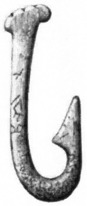

Az ember már a Kőkorszak óta horgászik. Ebben az időben még munkálatlan felszerelést vagy horgász szereléket használtak. Az első horgászok természetesen táplálékszerzés okán űzték ezt a tevékenységet: csalijukat a csontból, fából, vagy kőből készített horogra erősítették, majd azt egy karóhoz rögzítették, hogy könnyen lehessen kézzel mozgatni. Lassan erősebb és hegyesebb horgokat fejlesztettek ki, amikor a bronz, réz és más fémek egyre inkább közhasználatba kerültek.
|  |
| Kőkorszaki halászhorog csontból |
A XV. század után kezdődött a horgászat evolúciója, mialatt igazi sportággá nőtte ki magát. Előtte, a horgászat nem jelentett mást, mint a túlélés egyik módját. 1496-ban egy angol bárónő, Dame Juliana Berner a Treatyse of Fysshynge wyth an Angle (óangol nyelven a Horgászat Módszertana) című művében ír a horgász horog és bot készítés részleteiről. Ez a könyv alapozta meg a horgász tudományt. Majd másfél évszázaddal későbbi mű, Izaak Walton Tökéletes horgász című írása, nagyhatású kézikönyvnek bizonyult a fejlettebb horgász felszerelést, a halbiológiát, a különböző halfajok táplálkozási szokásait és e sport mögött húzódó filozófiát illetően.